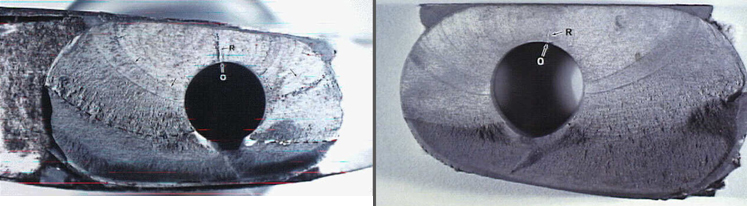
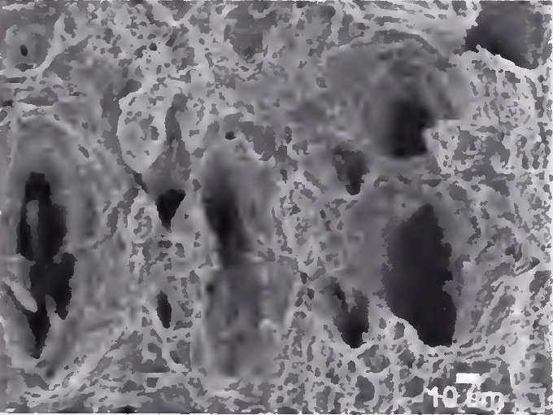
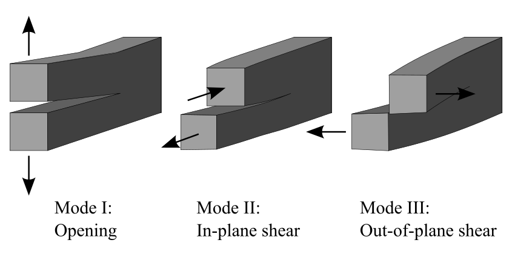
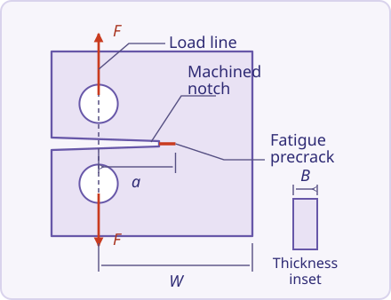
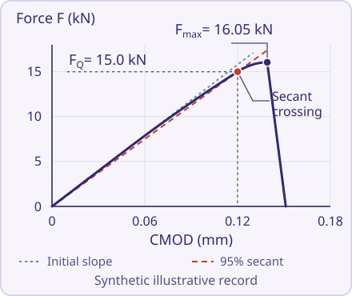

An AlMgSi aluminium-alloy specimen after tensile fracture. Local necking and the cup-and-cone surface profile show the plastic deformation accompanying failure.
Plastic deformation near the crack accompanies ductile tearing. In many metals, voids nucleate near particles or inclusions, grow, and join to form a crack. A round tensile bar may neck and leave a cup-and-cone fracture with a fibrous center and inclined shear lips. The amount of visible overall deformation also depends on specimen geometry and constraint.
Brittle fracture
This nodular-graphite cast-iron specimen fractured with little visible necking. The source identifies this specimen’s failure as brittle and notes that nodular cast irons usually show ductility.
A crack can travel rapidly with little overall plastic deformation. Cleavage in ferritic steel typically runs through grains along crystallographic planes. Brittle separation can also occur along weakened grain boundaries.
Ductile tearing and brittle fracture can occur in different regions of one surface. Temperature, loading rate, and constraint around the crack tip influence which mechanism dominates.
A Charpy impact test strikes a notched bar with a pendulum and measures the absorbed energy. Repeating the test at different temperatures helps characterize how the fracture response changes. This is the test used in the historical investigations below.
Read the fracture surfaces (fractography)
Start at low magnification to locate the likely origin and trace the crack path. Use higher magnification to look for dimples, cleavage facets, or exposed grain boundaries.

Locate an origin on the fracture face
These are opposite faces of the propeller-blade spar fracture from Atlantic Southeast Airlines Flight 529. Fatigue is progressive crack extension under repeated loading. The investigators marked origin areas with O and a ratchet mark from multiple fatigue origins with R. Arrowheads show fatigue propagation direction. Dashed lines bound the fatigue-cracked region. Follow these features back toward the origin before inspecting its local mechanism.
Describe the crack path and mechanism. A transgranular crack crosses grains. An intergranular crack follows grain boundaries. Dimples indicate local plastic rupture, while cleavage facets indicate crystallographic separation. Grain-boundary surfaces can also contain dimples. NBS fracture-surface investigation

Dimples in steel
Rounded depressions mark where voids grew and joined in a Charpy specimen from steel column N8-C1M1. The highlighted cavity and raised rim show the local relief of a ductile fracture surface.
Flat facets and steps indicate cleavage across grains in a room-temperature impact specimen from steel truss seat N13-C3B1. The labels identify surface features within this field of view.
A notched steel specimen shows fine dimples close to the notch and cleavage facets farther across the ligament. If low-magnification evidence places the origin at the notch, the sequence is consistent with initial ductile tearing followed by cleavage. The dimples show where voids joined. The facets show where the crack crossed grains by cleavage.
History
Steel structures that fractured in cold service prompted investigations into the combined effects of material toughness, flaws, and structural details.
In 1943 the tanker fractured while moored in Portland, Oregon. Wartime investigations examined cold-temperature notch toughness alongside crack initiation at structural details, welding, and residual stresses. Welded hulls could let a crack travel a long distance once it started.
Using a 27 J Charpy criterion, NIST reported transition temperatures of about 40 °C longitudinally and 70 °C transversely for recovered hull plate. The estimated seawater temperature was −2 °C. The investigators also examined the wrought-iron rivets and their slag inclusions. The iceberg strike initiated the damage, and the response of plates and joints influenced the subsequent flooding.
The recovered samples tell us how those materials could respond in the cold. The test result alone cannot reconstruct how every plate and joint failed during the collision.
Many ferritic steels absorb little impact energy on the cold lower shelf and much more on the warm upper shelf. In between, ductile tearing and cleavage can appear on the same fracture surface. Cooling increases the stress required for plastic flow, making cleavage more competitive at a loaded notch.
A pronounced transition is characteristic of many body-centered-cubic (BCC) metals, including ferritic steels. Common face-centered-cubic (FCC) alloys, including austenitic stainless steels and aluminium alloys, generally retain substantial ductility on cooling.
The ductile-to-brittle transition temperature (DBTT) depends on the criterion. A temperature at 27 J, the midpoint between the energy shelves, and the temperature at 50% shear fracture appearance may differ. Use multiple specimens and temperatures to fit a transition curve, particularly where results scatter widely. Report the criterion, specimen, test conditions, and uncertainty with the result.
A Charpy series gives 20 J at −40 °C and 50 J at −20 °C. Estimate T27 J by linear interpolation between those points.
The fraction of the interval is (27 − 20)/(50 − 20) = 7/30. Therefore T27 J = −40 + (7/30)(20) = −35.3 °C, or about −35 °C. This is a local interpolation estimate. Experimental uncertainty requires additional test results.
Charpy supports a notched bar on two anvils and strikes opposite the notch. Izod clamps one end and strikes the free part above the notch on the notched side. For metallic specimens, the absorbed energy in joules is the drop in pendulum potential energy from the release height to the peak after impact, corrected for machine losses.
The absorbed energy reflects the specimen’s response to impact, including plastic deformation and fracture. Use Charpy data at multiple temperatures to study a steel’s transition. The measured energy is specific to the setup. Compare results at matched method, specimen dimensions, notch geometry, orientation, temperature, striker geometry, and impact speed.
The pendulum loses 110 J between release and the peak after fracture. The correction for machine losses over this swing is 2 J. The specimen’s reported absorbed energy is 110 − 2 = 108 J.
The Comet investigation showed how small-radius corners in nearly rectangular cabin windows and other openings concentrate tensile stress. The local stresses were higher than designers had anticipated. Countersunk fastener holes near a corner could raise the stress further. These details made the pressure cabin vulnerable to fatigue under repeated pressurization.
In 1954, the de Havilland Comet G-ALYP broke up near Elba. Investigators found fatigue cracking near the rear roof opening for a direction-finding antenna. They identified the edge of a nearby countersunk bolt hole as the probable crack origin. A second breakup near Naples that year was consistent with a similar failure, although too little wreckage was recovered to establish the cause.
In a separate full-scale test, investigators repeatedly pressurized Comet G-ALYU in a water tank. The cabin ruptured at a corner of the forward escape-hatch window. As an aircraft climbs and descends, the changing cabin pressure differential cycles the stress in the skin. Repeated cycles can initiate and grow a fatigue crack at a highly stressed detail. As the crack grows, the cabin can fracture at a pressure differential it had previously carried.
This case connects fatigue crack growth under repeated loading with final fracture at a critical flaw size. The next section examines how opening shape and corner radius affect stress concentration. Crack-tip stresses and fracture toughness then connect the applied stress with the critical crack size.
The cabin skin tore at the forward port-side escape hatch of G-ALYU. This view from inside the airframe shows the window opening and the ruptured skin below it.
A hole or rounded notch raises the local elastic stress above the nominal stress. The elastic stress concentration factor is Kt = σmax/σnom. It is dimensionless.
The Inglis solution applies to an effectively infinite elastic plate under remote tension perpendicular to the long axis of an elliptical hole. The semi-axes are a and b, with tip radius ρ = b2/a.
Kt = 1 + 2a/b = 1 + 2√(a/ρ)
A circular hole gives Kt = 3. As the ellipse sharpens toward a crack, the elastic peak stress grows without bound. A sharp crack is described by the stress intensity factor KI, which sets the magnitude of the near-tip stress field.
Original schematic of the Inglis geometry. The peak tensile stress occurs at the ends of the major axis.
Find the stress at a hole
An elliptical hole has a = 4 mm and b = 2 mm. The remote tensile stress is 50 MPa, perpendicular to the long axis.
Kt = 1 + 2(4/2) = 5. The peak elastic stress is 5 × 50 = 250 MPa.
Griffith’s energy balance
A growing crack releases mechanical energy and creates new surfaces. The energy release rate G is the decrease in mechanical potential energy, comprising elastic strain energy minus the work of external loads, per unit increase in projected crack area. That area counts the advancing crack once. Two opposing surfaces are created, so the ideally brittle Griffith model has a resistance Gc = 2γs, where γs is the energy per unit area of one surface.
E′ = E in plane stress and E′ = E/(1 − ν2) in plane strain, where ν is Poisson’s ratio. Plane stress allows deformation through the thickness. Plane strain approximates a constrained interior with very little strain in that direction. The thickness comparison below illustrates both conditions.
For a central through crack of total length 2a in an effectively infinite plate under uniform tension σ, the energy release rate and critical tensile stress are
G = πaσ2/E′
σc = √(E′Gc/(πa))
Crack extension becomes energetically possible when G reaches the resistance. At fixed remote stress in this ideal model, G increases as the crack extends while Gc stays constant, allowing unstable growth. In metals, plastic deformation dissipates additional energy, so the measured fracture resistance can greatly exceed 2γs.
At fixed remote stress, the energy release rate increases with crack half-length. The intersection marks the critical half-length for an ideally brittle plate.
Predict fracture stress with Griffith theory
A large glass plate in plane stress has E = 70 GPa, γs = 1.0 J/m2, and a central crack of total length 0.20 mm. Find σc for ideally brittle growth.
Use the half-length a = 1.0 × 10−4 m and Gc = 2.0 J/m2. Substituting into √(E′Gc/(πa)) gives 21.1 MPa.
Modes of fracture
The three loading modes describe the relative motion of the two crack faces. The crack front is the line where the faces meet the intact material.
Mode I · Opening
The faces separate normal to the crack plane.
Mode II · Sliding
The faces slide within the crack plane, perpendicular to the crack front.
Mode III · Tearing
The faces slide within the crack plane, parallel to the crack front.

Arrows show relative displacement. In Mode III, “out-of-plane” means motion out of a cross-section perpendicular to the crack front. Twisp, Wikimedia Commons, public domain
If a load both opens a crack and slides its faces perpendicular to the crack front, the crack experiences mixed Mode I and Mode II loading.
Stress intensity factor
A stress intensity factor sets the amplitude of the leading near-tip elastic stress field for its loading mode. The three amplitudes are KI, KII, and KIII. Each depends on the applied loads, crack size, and geometry.
Mode I under remote tension
KI = Yσ√(πa)
G = KI2/E′
The dimensionless factor Y accounts for geometry and loading. Use Y = 1 for a central through crack in an effectively infinite plate under uniform tension. Here a is half the total crack length. For an edge crack, a is its depth and a different Y applies. Use metres for a with σ in MPa to obtain MPa√m.
The second equation relates the Mode I elastic field to Griffith’s energy release rate. In plane stress, E′ = E. In plane strain, E′ = E/(1 − ν2).
Calculate stress intensity for a central crack
A central through crack is 4.0 mm long in a wide plate under 150 MPa tension. With a = 0.0020 m and Y ≈ 1, the stress intensity is 150√(π × 0.0020) = 11.9 MPa√m. If the total length increases to 16.0 mm under the same stress and Y is still approximately 1, KI doubles to 23.8 MPa√m.
Stress field near the crack tip
Place the origin at the crack tip, with x pointing straight ahead and y normal to the crack plane. Measure distance r from the tip and angle θ counterclockwise from positive x. The crack faces lie behind the tip at θ = ±π.
Mode I loading opens the crack. In an isotropic, linearly elastic material, the leading crack-tip stresses vary as 1/√r. The stress intensity factor KI sets their amplitude; the angular functions below describe how each component varies around the tip.
The origin lies at the tip. Positive x points ahead of the crack; y is the opening direction. Angle θ is measured from positive x toward positive y.
Higher-order terms are omitted. These in-plane terms apply in both plane stress and plane strain; the out-of-plane stress differs between those conditions.
The approximation applies outside the crack-tip process or plastic zone, in the elastic region where the leading term dominates. This region must also be close to the tip relative to crack length and specimen dimensions. The elastic formula diverges as r approaches zero; local yielding or other process-zone mechanisms limit its applicability there.
Directly ahead of the tip (θ = 0), the leading terms reduce to
Compare σyy at 0.25 mm and 1.00 mm directly ahead of the same fixed crack. If both points lie in the region where the leading term dominates, the ratio is √(1.00/0.25) = 2. The point four times closer has twice the opening stress.
Fracture toughness
Fracture toughness measures a material’s resistance to extension of an existing crack under specified conditions.
Thickness and crack-tip constraint
Take z along the crack front, through the specimen thickness B. At a traction-free face, stress normal to that face is zero. A thin specimen is often approximated by plane stress, with σzz ≈ 0. Material near its tip can contract and deform through the thickness.
In a sufficiently thick specimen, the surrounding material restrains that deformation in the interior. Plane strain approximates this region with εzz ≈ 0. Tensile stress develops along z, increasing constraint on plastic flow. Surface regions still have lower constraint.
Small-scale yielding requires a plastic zone small compared with the crack size and remaining ligament, so an elastic stress intensity factor can characterize the surrounding field. A plane-strain KIc test also needs sufficient thickness to maintain high constraint in the interior. The method’s size and geometry requirements help establish these conditions.
Conceptual thickness comparison. Plastic-zone shapes and relative sizes are illustrative. The stress state varies along a real crack front.
Compare the applied intensity with toughness
KIc is the Mode I plane-strain fracture toughness measured under conditions of predominantly linear elastic response. Under matching conditions, the fracture criterion is
KI = KIc
Toughness can depend on temperature, loading rate, crack orientation, and environment. When the plastic zone grows too large for small-scale yielding, use an elastic-plastic parameter such as the J-integral or crack-tip opening displacement (CTOD), within the chosen method’s limits. A resistance curve records how resistance changes during stable tearing. Whether extension becomes unstable also depends on how the applied driving force changes as the crack grows.
Vary the crack length
Consider a wide plate with a central crack, Y = 1, σ = 180 MPa, and KIc = 24 MPa√m. Assume monotonic Mode I loading, plane strain, and small-scale yielding. Move the slider to compare the driving force with the toughness.
02436 MPa√m
KI = 14.3 MPa√m. Below the Mode I fracture threshold.
The toughness comparison addresses fracture under the stated load. Under cyclic loading, fatigue can extend a crack at peak stress intensities below KIc, as the Comet investigation illustrates.
Quantities used to describe fracture
Quantity
Unit
What it measures
Absorbed impact energy, Eabs
J
Energy absorbed in a specimen tested with a specified impact setup.
Energy release rate, G
J/m2
Mechanical energy available per increase in projected crack area. Its critical value is Gc.
J-integral
J/m2
A crack-driving parameter used for elastic-plastic fracture under the applicable test conditions. A qualified initiation value is JIc.
Stress intensity, KI
MPa√m
Amplitude of the Mode I elastic crack-tip field. A qualified plane-strain critical value is KIc.
Find a critical edge-crack depth
A wide plate in tension has σ = 160 MPa and KIc = 30 MPa√m. Assume Mode I, plane strain, small-scale yielding, and Y = 1.12 over the relevant crack sizes.
Set KI = KIc. Then ac = (30/(1.12 × 160))2/π = 0.00892 m = 8.92 mm.
Estimate how strain rate shifts the transition in molybdenum
Molybdenum contains sharp cracks of half-length a = 2 µm. Take Young’s modulus E = 350 GPa and the energy per unit area of one new fracture surface γs = 2 J/m2. Its empirical yield-stress relation is
σy = 20.6 + 173600/T + 61.3 log10(ε̇)
Use numerical values with σy in MPa, T in kelvin, and the imposed strain rate ε̇ = dε/dt in s−1. Estimate the transition temperature at (i) 10−2 s−1 and (ii) 10−5 s−1.
Model. Assume a central through crack in a large plate under plane stress, and hold E, γs, and a constant. Estimate the transition by equating the yield stress with the ideally brittle fracture stress. The Griffith energy balance introduced above gives the fracture stress used here.
Calculate the fracture stress. Two new surfaces require Gc = 2γs = 4 J/m2. Use the half-length a = 2 × 10−6 m and E = 350 × 109 Pa.
σc = √[2Eγs/(πa)] ≈ 472.0 MPa
Apply the crossover condition. Set σy(T, ε̇) = σc. Rearranging the supplied relation gives
T = 173600 / {472.0349 − 20.6 − 61.3 log10(ε̇)}
The result is in kelvin. Additional digits in the fracture stress are retained when evaluating the denominator.
Substitute each strain rate. At 10−2 s−1, the yield law becomes σy = −102.0 + 173600/T, giving T = 173600/(472.0349 + 102.0). At 10−5 s−1, it becomes σy = −285.9 + 173600/T, giving T = 173600/(472.0349 + 285.9).
The higher strain rate raises the yield stress at a given temperature, so the crossover with the fixed fracture stress occurs at a higher temperature. In this model, yielding occurs first on the warmer side of the crossover and ideally brittle fracture occurs first on the colder side. The estimates depend on the assumed flaw size and fracture model. A measured Charpy transition temperature additionally depends on its chosen energy or fracture-appearance criterion.
Adapted from V. Raghavan, Materials Science and Engineering: A First Course, Example 12.3, PHI Learning. The source’s Young’s modulus Y is written E, with yield stress σy, fracture stress σc, crack half-length a, and surface energy γs following this lesson’s notation. Publisher reference
Fracture toughness testing
Grow a sharp fatigue precrack from a machined starter notch. Load the specimen so the crack opens in Mode I, and record force and displacement. Use the measured crack length and specimen geometry to determine resistance to crack extension.
Compact tension, C(T)

Two pins pull through the holes and open the crack. Measure both a and W from the pin load line. The total crack length includes the starter notch and fatigue precrack.
Single-edge bend, SE(B)
The center roller bends the bar over two supports. The crack is on the tensile side. Measure a from the notched surface to the fatigue crack tip. This example uses span S = 4W.
These schematics show the dimensional conventions. The selected standard supplies the permitted proportions, tolerances, notch preparation, and precrack requirements.
Choose the test from the material response
Mode I fracture toughness methods for metallic materials
Response or purpose
Method
Reported result
Predominantly elastic response with sufficient plane-strain constraint
K, J, CTOD, and resistance curves under the applicable procedures.
ASTM E399 directs cleavage-fracture testing to E1921 and E1820. This connects the earlier ferritic-steel transition discussion to an appropriate precracked-specimen test. A Charpy transition temperature and the Master Curve reference temperature characterize different test responses.
From the specimen to a qualified result
Document the material, crack orientation, temperature, loading rate, and specimen dimensions. Produce and measure a fatigue precrack meeting the chosen method.
Record force F against the prescribed displacement. For the E399 procedure, evaluate the record with its initial elastic slope and 95% secant construction to determine FQ.
Calculate conditional toughness KQ from FQ and the measured geometry. Apply the force-record, size, precrack, and other prescribed checks.
Report KIc only when qualification succeeds. Otherwise retain the conditional result and select a suitable size or test procedure.
The 95% secant has 95% of the initial elastic slope. It is a prescribed evaluation construction. Microscopic damage or crack extension can begin before its intersection with the record. Records containing earlier peaks require the full selection rules for FQ.
Evaluate a compact tension test
A hypothetical C(T) test has W = 40 mm, B = 20 mm, a = 20 mm, and 0.2% proof strength σpy, 0.2 = 450 MPa at the test temperature. Use the synthetic force–CMOD record below and the C(T) shape factor f(0.5) = 9.659. Assume the remaining specimen, precrack, temperature, and loading requirements have been documented as satisfied for an E399 test.
Read the conditional force. The smoothly rising record intersects the 95% secant at FQ = 15.00 kN. Its maximum is Fmax = 16.05 kN.
Calculate toughness. With force in N and lengths in m, KQ = [FQ/(B√W)] f(a/W). Substitution gives [15,000/(0.020√0.040)] × 9.659 = 36.22 × 106 Pa√m = 36.2 MPa√m.
Check the force ratio.Fmax/FQ = 16.05/15.00 = 1.07 ≤ 1.10.
Check the remaining ligament.W − a = 20 mm. The required minimum is 2.5(KQ/σpy, 0.2)2 = 2.5(36.22/450)2 m = 16.2 mm. The ligament passes.

The original slope is 131.58 kN/mm and the secant slope is 125.00 kN/mm. The secant crosses at 0.120 mm and 15.00 kN.
Interpretation. Both calculated checks pass. Together with the stated assumption that all remaining requirements are satisfied, this hypothetical test yields KIc = 36.2 MPa√m. An experimental report must substantiate those remaining requirements.
A second record gives FQ = 10.0 kN and Fmax = 11.8 kN. The ratio is 1.18, above 1.10. The result remains conditional KQ. Meeting a size requirement cannot compensate for this failed force-record check.
A published disk compact specimen
The disk compact DC(T) specimen provides another standardized geometry. Its calibration follows its own dimensions and loading arrangement.